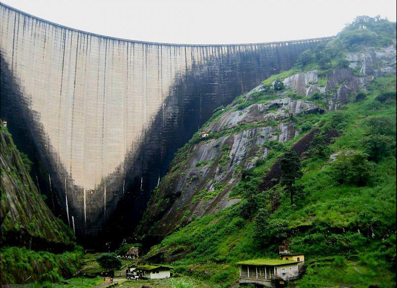

IDUKKI
dukki is one of the 14 districts of Kerala state, India,[1] created on 26 January 1972. At that time, the district headquarters was at Kottayam. In June 1976 it was moved to Painavu. Idukki which lies in the Western Ghats of Kerala. Idukki is the second largest district in area but has the lowest population density. Idukki has a vast forest reserve area; more than a half of the district is covered by forests. The urban areas are densely populated whereas villages are sparsely populated. Idukki is also known as the spice garden of Kerala.

Munnar